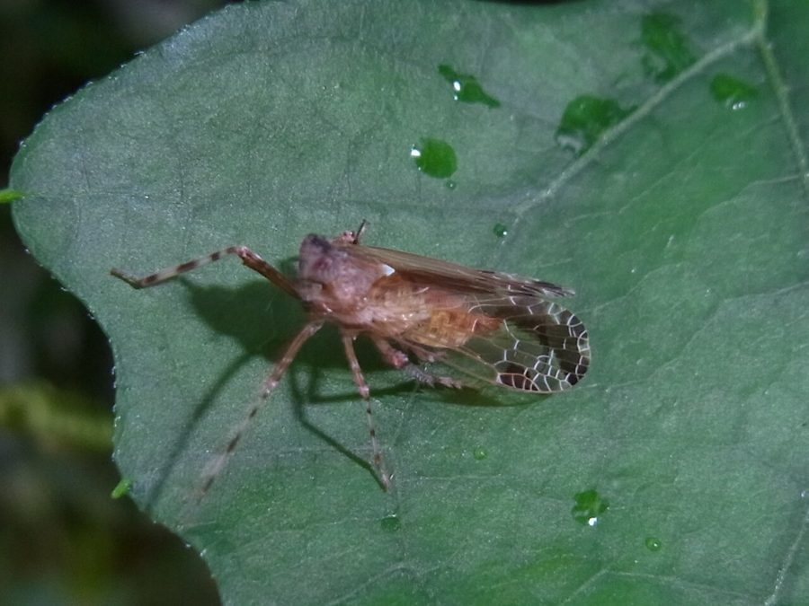

चंद्राकार डिक्टियोफेरिडCrescent Dictyopharid
Orthopagus lunulifer · Dictyopharidae · INS-0223

- Scientific name वैज्ञानिक नाम
- Orthopagus lunulifer Uhler, 1896
- Family कुल
- Dictyopharidae
- Hindi हिंदी
- चंद्राकार डिक्टियोफेरिड
- Local names स्थानीय नाम
- crescent dictyopharid, orthopagus lunulifer, crescent planthopper, chandrakaar phudka
- Status here यहाँ की स्थिति
- native
- Movement आवागमन
- Resident, here all year
- Known from कहाँ दर्ज
- Others have published records from the wider Awadh–Purvanchal plain, none yet from Basti–Ayodhya अवध–पूर्वांचल से दूसरों के प्रकाशित अभिलेख, बस्ती–अयोध्या से अभी नहीं
- IUCN IUCN
- not evaluated
- Review समीक्षा
- not yet reviewed
When to look कब देखें
Expected mainly in June, July, August, September, October, November. मुख्यतः जून, जुलाई, अगस्त, सितंबर, अक्टूबर, नवंबर में अपेक्षित।
Tell it apart from इनसे अलग पहचानें
चंद्राकार डिक्टियोफेरिड / Crescent Dictyopharid
Orthopagus lunulifer Uhler, 1896 — Dictyopharidae
चंद्राकार डिक्टियोफेरिड — धान के खेतों, दलदली नालों और नहरों के किनारे उगी लंबी घासों पर पाया जाने वाला एक अनोखा, सींग वाला फुदका। इसका सिर आगे की ओर एक मुड़े हुए लंबे सींग (थूथन) की तरह निकला होता है। इसके पंख कांच की तरह बिल्कुल पारदर्शी होते हैं, जिनके पिछले हिस्से पर आधे चांद (चंद्राकार) जैसा गहरा कत्थई धब्बा बना होता है। यह घासों का रस चूसता है और बहुत तेजी से छलांग लगाता है।
Quick Identification त्वरित पहचान
| Feature | Description |
|---|---|
| Habit | Slender, elongate planthopper 11.7–14.9 mm long to the tips of the folded forewings (Song et al. 2018) |
| Head | Produced forward into a prominent, upturned cylindrical cephalic horn (Uhler 1896) |
| Tegmina | Completely hyaline (glassy transparent) with dark brown veins and pterostigma |
| Wing mark | Conspicuous dark fuscous crescentic or arcuate fascia curving across apical cells (Uhler 1896) |
| Coloration | Pale greenish-ochraceous to testaceous brown, often with green longitudinal stripes |
| Hind legs | Long, slender; hind tibiae armed with 4–5 strong lateral spines and apical spinules |
Field tip: Sweep tall grasses along wet ditch edges and paddy bunds during the rainy season for slender transparent-winged planthoppers with an upturned head horn and crescent wing marks.
हिंदी — कैसे पहचानें: आगे की ओर उठा हुआ लंबा सींग जैसा सिर, शीशे जैसे पारदर्शी पंख, और पंखों के सिरे पर बना अर्धचंद्राकार कत्थई निशान।
Morphology शारीरिक संरचना
Measurements as given by Song et al. (2018):
| Measurement | Value | Source |
|---|---|---|
| Body length to the tips of the forewings, male | 11.7–13.4 mm | Song et al. (2018) |
| Body length to the tips of the forewings, female | 13.0–14.9 mm | Song et al. (2018) |
| Forewing length, male | 9.4–10.8 mm | Song et al. (2018) |
| Forewing length, female | 10.2–11.9 mm | Song et al. (2018) |
Cephalic horn and head: Head strongly produced in front of eyes into a long, cylindrical or prismatic cephalic process curving slightly upward towards the rounded tip; process bearing distinct dorsal, ventral, and lateral longitudinal carinae; frons elongate, narrow, with three sharp parallel longitudinal keels; vertex narrow, extending forward along the process; eyes large, dark globular.
Thorax and wings: Pronotum transverse, anterior margin angularly produced into the base of the head, posterior margin deeply emarginate, disc with a sharp median longitudinal carina. Mesonotum tricarinate, diamond-shaped, pale testaceous with greenish lateral margins. Tegmina elongate, glassy-hyaline; veins slender, fuscous; pterostigma distinct, divided by 3–4 cross-veins; apical area crossed by an oblique, dark brown or fuscous crescent-shaped band spanning from the costal margin across the apical cells. Hindwings hyaline with darker veins.
Venter and legs: Body beneath pale greenish-ochraceous. Rostrum long, reaching the metacoxae. Legs slender, greenish-testaceous; profemora unspined; hind tibiae equipped with 4–5 sharp lateral spines and an apical pecten of spinules.
हिंदी: सिर के आगे से एक मुड़ा हुआ सींग निकलता है जिस पर उभरी हुई धारियां होती हैं। पंख कांच जैसे साफ और पारदर्शी होते हैं जिन पर भूरे रंग का आधा चांद बना होता है। पिछली टांगों पर कांटे होते हैं।
Behaviour & Ecology व्यवहार एवं पारिस्थितिकी
Orthopagus lunulifer is a wetland specialist adapted to aquatic macrophyte stands, marshy canal corridors, and flooded paddy agrosystems. Both nymphs and adults inhabit dense grass and sedge stands where water stands during the monsoon season.
The insects rest lengthwise along vertical grass blades, their slender pale bodies and transparent wings blending seamlessly with the linear green foliage. The prominent cephalic horn likely plays a sensory or aerodynamic role during flight, while breaking the insect's outline against vertical plant stems. When alarmed, it exhibits extraordinary leaping prowess: using its powerful hind tibiae, it catapults itself instantaneously into the surrounding marsh vegetation. Adults feed by tapping the phloem tissues of wetland grasses, producing clear droplets of honeydew.
हिंदी: यह कीड़ा दलदली जमीनों और धान के खेतों में घास के तनों पर सीधा सटकर बैठता है। पारदर्शी पंखों के कारण यह घास में दिखाई नहीं देता। छेड़े जाने पर यह बिजली की तेजी से छलांग लगाकर दूर भाग जाता है।
Life Cycle / Phenology जीवन चक्र एवं ऋतुचक्र
| Period | Phenological Event |
|---|---|
| June–July | Monsoonal flooding stimulates the emergence of early-instar nymphs in wetland grasses |
| August–September | Nymphs develop through five instars amidst lush semi-aquatic vegetation |
| October–November | Peak adult abundance; mating and egg-laying on ripening rice and ditch reeds |
| December–May | Species survives winter and the hot dry pre-monsoon predominantly as dormant eggs |
Eggs are inserted in neat slits within the spongy parenchyma of aquatic grass stems, where they endure periodic seasonal drying until monsoonal rains refill the marshes.
हिंदी: बरसात शुरू होते ही इसके बच्चे पानी में उगी घासों पर दिखने लगते हैं। सावन-भादों में वयस्क कीड़े बनते हैं और कुंवार-कार्तिक में धान के खेतों में उड़ते हैं। गर्मी के दिनों में इसके अंडे घास के तनों में सुरक्षित रहते हैं।
Host Plants or Prey पोषक पौधे अथवा शिकार
- Wetland Gramineae: Feeds on succulent stems of Asian Watergrass and Burgu Grass.
- Cultivated Cereals: Readily attacks vegetative tillers and leaves of Paddy.
- Canal Sedges: Inhabits marshy ditch fringes dominated by tall cyperaceous sedges.
हिंदी: यह धान के पौधों, जल घास, बरगू घास और नालियों के किनारे उगने वाले मोथा का रस चूसता है।
Predators / Natural Enemies प्राकृतिक शत्रु
- Odonata: Damselflies (Ischnura) and dragonflies prey heavily on flying adults over marshes.
- Orb-weavers: Long-jawed orb-weaving spiders (Tetragnatha) spin webs across grass culms to intercept jumping planthoppers.
- Egg Parasitoids: Mymarid fairy wasps parasitize eggs inserted into grass tissues.
हिंदी: पानी के ऊपर उड़ने वाली व्याध पतंगे (ड्रेगनफ्लाई) और धान के खेतों की लंबी मकड़ियां इसका शिकार करती हैं।
Agricultural / Human Relevance कृषि एवं मानवीय उपयोगिता
Agricultural Context:
- Minor paddy pest. Occasionally recorded feeding on young rice tillers in low-lying, waterlogged paddies, causing slight yellowing if present in unusually high densities.
- Non-vector status. Unlike certain delphacid planthoppers, it is not a primary vector of catastrophic rice viral diseases in northern India.
- Wetland food chain. Constitutes a vital seasonal food resource for aquatic wildlife, predatory water beetles, and migratory waterfowl feeding in post-monsoon jheels.
Today. Encountered commonly throughout irrigated rice ecosystems, seasonal drains, and river floodplains across eastern Uttar Pradesh during the monsoon.
हिंदी: धान के खेतों में यह कभी-कभी दिखाई देता है लेकिन फसलों को गंभीर नुकसान नहीं पहुंचाता। यह दलदली पक्षियों और उपयोगी कीटों के लिए भोजन का एक अच्छा स्रोत है।
Expected Locally स्थानीय संभावना एवं उपस्थिति
Not a field record. Written from published accounts for eastern Uttar Pradesh. No confirmed local sighting yet — if you have seen it, that is what the atlas needs.
अभी तक स्थानीय पुष्टि नहीं। यह विवरण प्रकाशित स्रोतों से है, किसी अवलोकन से नहीं।
Expected in eastern Uttar Pradesh across agricultural crops, orchard groves, riverine scrub, and rural vegetation across Basti, Sant Kabir Nagar, and Ayodhya. GBIF holds published records from the wider Awadh–Purvanchal plain, none yet from Basti–Ayodhya. A first local record would be a dated photograph of the cephalic horn, hyaline wings, and crescent-shaped apical mark, submitted with locality details through the project's About page.
Distribution भौगोलिक वितरण
Global range: Widespread across East Asia, South Asia, and Southeast Asia, from India and Sri Lanka to China, Taiwan, Japan, and the Philippines.
In India: Recorded from north-eastern India and Nepal; the species ranges across eastern Asia from Japan and Korea through China, Vietnam and Laos (Song et al. 2018).
In Uttar Pradesh: Distributed across irrigated alluvial plains, canal tracts, and seasonal marshes.
In Basti district / eastern UP: Expected in low-lying paddy paddocks, jheel margins, and ditch vegetation.
हिंदी: भारत के गंगा के मैदानों, असम, पश्चिम बंगाल, चीन और जापान के नम धान के खेतों और दलदली इलाकों में यह कीड़ा पाया जाता है।
Research Questions शोध प्रश्न
- What is the population density of Orthopagus lunulifer in flooded versus dry-seeded rice fields in Basti? / बस्ती में पानी भरे धान के खेतों और सूखे खेतों में इस कीड़े की संख्या में कितना अंतर होता है?
- Which Tetragnatha spider species exert the highest predatory mortality on jumping dictyopharids? / धान के खेतों में जाला बनाने वाली कौन-सी मकड़ियां इसका सबसे ज्यादा शिकार करती हैं?
- What is the optical refractive index of the hyaline tegmina in relation to ambient marsh camouflage? — Measure spectral transmittance of wings across ultraviolet and visible wavelengths.
- Does the cephalic horn serve as a hydrodynamic sensor during monsoon wind squalls? — Video-record flight stability in wind tunnels with intact versus ablated cephalic processes.
- How does flood inundation depth affect egg hatching success in emergent grass stems? / क्या बाढ़ के पानी के स्तर से इसके अंडों के फूटने पर कोई असर पड़ता है?
Similar Species समान प्रजातियाँ
| Species | How to tell apart | हिंदी |
|---|---|---|
| Green Dictyopharid (Dictyophara europaea) | Entirely grass-green; cephalic process straight, not upturned; no crescent mark | पूरा हरा शरीर, सीधा सींग, कोई चंद्राकार निशान नहीं |
| Green-snouted Lanternfly (Pyrops viridirostris) | Much larger; cephalic horn brilliant emerald-green; hindwings turquoise | बहुत बड़ा, चमकदार हरा सींग, नीले पंख |
| Rust-colored Flatid (Flata ferrugata) | Broad rust-brown wings held tent-like; opaque; head truncate, without horn | कत्थई-भूरे खड़े पंख, कोई सींग नहीं |
Field rule: Slender wetland planthopper with an upturned cylindrical head horn and transparent hyaline wings bearing a prominent dark brown crescent-shaped band across the tip identifies Orthopagus lunulifer.
Taxonomy & Classification वर्गिकी एवं वर्गीकरण
Original description. Described by Philip Reese Uhler in 1896 as Orthopagus lunulifer in Proceedings of the United States National Museum, vol. 19, p. 280. Uhler described it from Japan; the paper is dated 1896 on its title page and was issued in 1897, so the name is also written Orthopagus lunulifer Uhler, 1897. Song et al. (2018) synonymised O. helios Melichar, 1912 with it.
Subspecies. Monotypic; no valid subspecific entities are recognized across its extensive East and South Asian range.
Family and order placement. Belongs to the planthopper family Dictyopharidae, subfamily Dictyopharinae, tribe Orthopagini, in the order Hemiptera.
Phylogenetic notes. Characterized by the prolonged prismatic cephalic process, tricarinate frons, fully transparent tegmina with apical crescent fascia, and multi-spined hind tibiae.
IUCN status rationale. Not evaluated in the master expansion list; it is a widespread native wetland insect with abundant continental populations.
हिंदी: फिलिप रीस उहलर ने 1896 में इसका पहला वैज्ञानिक विवरण 'ऑर्थोपैगस लुनुलिफर' नाम से दिया था। यह डिक्टियोफैरिडी कुल का सदस्य है, जिसकी मुख्य पहचान इसका सींग और पारदर्शी पंख हैं।
Photo Gallery छायाचित्र दीर्घा
No photos yet — add field photos to media/species/crescent_dictyopharid/ and run node scripts/sync_photos.js.
Photos needed आवश्यक फोटो
- [ ] Adult resting along a vertical grass culm in a paddy field (धान के खेत में तने पर बैठा वयस्क कीड़ा)
- [ ] Close-up showing the upturned cephalic horn and faceted eyes (मुड़े हुए सींग और उभरी आँखों का विस्तृत चित्र)
- [ ] Macro shot showing the transparent wings and dark crescent mark (पारदर्शी पंखों और आधे चांद के निशान का क्लोज-अप)
References संदर्भ सूची
- Uhler, P.R. (1896). Summary of the Hemiptera of Japan, presented to the United States National Museum by Professor Mitzukuri. Proceedings of the United States National Museum, 19(1108), pp. 255–297.
- Melichar, L. (1912). Monographie der Dictyophorinen (Homoptera). Abhandlungen der K. K. Zool.-Botan. Gesellschaft in Wien, 7(1), pp. 1–221.
- Song, Z.-S., Malenovský, I., Chen, J.-Q., Deckert, J. & Liang, A.-P. (2018). Taxonomic review of the planthopper genus Orthopagus (Hemiptera, Fulgoromorpha, Dictyopharidae), with descriptions of two new species. Zoosystematics and Evolution, 94(2), pp. 369–391. doi:10.3897/zse.94.26859
- Metcalf, Z.P. (1946). General Catalogue of the Hemiptera, Fascicle IV: Fulgoroidea, Part 8: Dictyopharidae. Smith College, Northampton, Massachusetts.
- Bourgoin, T. (2025). FLOW (Fulgoromorpha Lists On the Web): a world knowledge base dedicated to Fulgoromorpha, version 8. https://flow.hemiptera-databases.org/flow/
- GBIF Occurrence Data — Orthopagus lunulifer Uhler, 1896, India (2025).
Source file: species/fauna/insects/crescent_dictyopharid.md